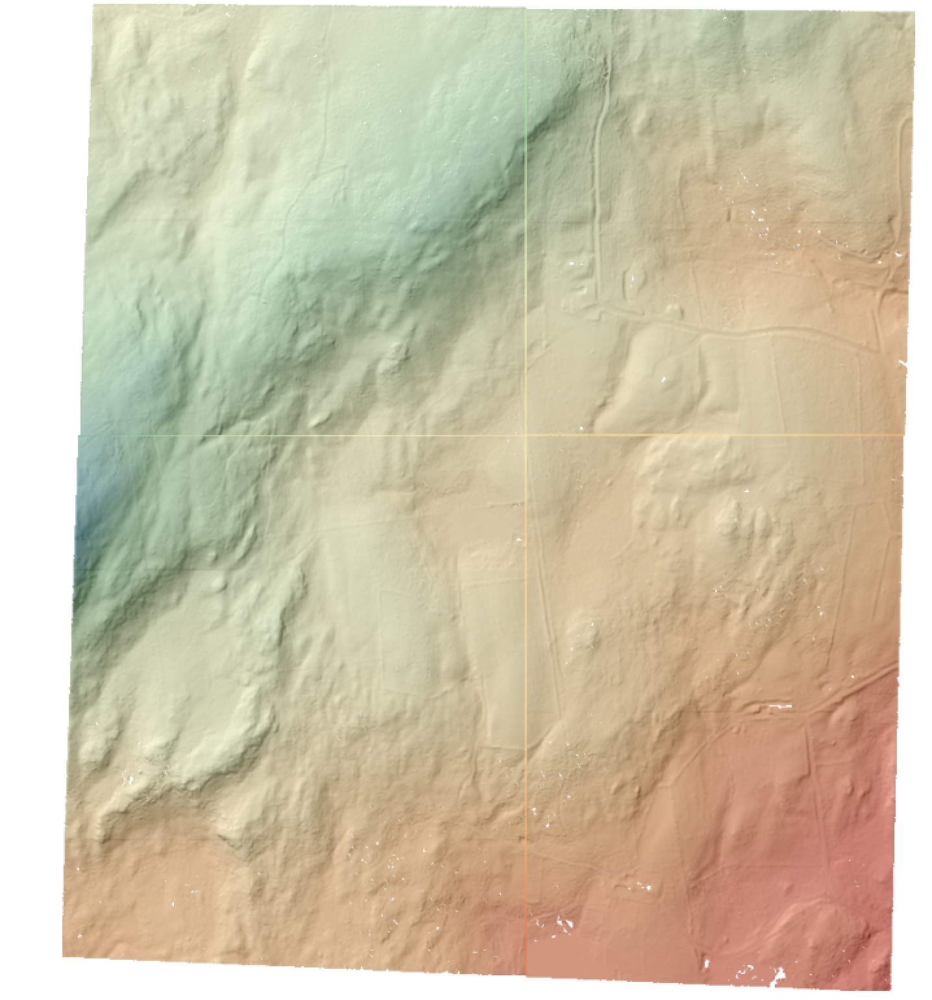

Batch Processing¶
PDAL doesn’t handle matching multiple file inputs except for glob handling for merge operations, but does allow for command line substitution parameters to make batch processing simpler, substitutions. Substitutions work with both Pipeline operations as well as with other applications such as translate.
Operating system variations¶
How substitutions are passed generally depends on the operating system and tools available.
In the unix/linux environments, this is primarily using the find and ls programs to get
lists of files (either with directories or just filenames) and the xargs program to pass
those files to the Applications application (although -exec with find can also be used). These
tools are available in the docker environment if you are running PDAL under docker. They
are also available under Windows one installs Cygwin or MinGW. They are also available if
Git for Windows is installed. They are also available as win32 command line programs installed
from the GNU Findutils (https://www.gnu.org/software/findutils/findutils.html).
Windows native tools¶
Subtitions can be handled directly in windows using PowerShell syntax.
While there are a number of ways to generate lists of files, the Get-ChildItem is used here, along with the foreach option to pass each separate filepath to the pdal application.
Example - Batch compression of LAS files to LAZ:¶
To compress a series of LAS files in one directory into compressed LAZ files in another directory, the PowerShell syntax would be:
Get-ChildItem .\DIR1\*.las | foreach {pdal translate -i .\DIR1\$($_.BaseName).las -o .\DIR2\$($_.BaseName).laz}
Note the use of the $($_.BaseName) syntax for the files passed. This option on the $($_) shortcut for the full filename, removes the directory and the extension on the file and allows the user to set the path and extension manually.
The resulting 4 DTMs in QGIS look like:
{kind=link}
Example - Parallel Batch compression of LAS files to LAZ:¶
This use of the PowerShell syntax doesn’t allow a user to execute more than one process at a time. There is a free download of the xargs program that provides parallel execution available at http://www.pirosa.co.uk/demo/wxargs/ppx2.exe. For this tool, the file names are passed with using the {} syntax.
Get-ChildItem .\dir1\ | Select-Object -ExpandProperty BaseName | .\ppx2.exe -P 3 pdal translate -i ".\dir1\{}.las" -o ".\dir2\{}.laz"`
Exercise - Pipeline Substitions:¶
For the most flexibility, pipelines are used to apply a series of opertations to a file (or group of files). In this excersise, we build on the Generating a DTM pipeline example, but run this pipline over 4 files and reproject, calculate a bare earth using the filters.smrf filter, remove those points that aren’t bare earth with filters.range and then write the output using the writers.gdal.
The pipeline we are using is:
{
"pipeline": [
{
"type":"readers.las"
},
{
"type": "filters.reprojection"
},
{
"type": "filters.smrf"
},
{
"type":"filters.range",
"limits":"Classification[2:2]"
},
{
"gdaldriver":"GTiff",
"output_type":"idw",
"resolution" :"2.0",
"type": "writers.gdal"
}
]
}
You might have spotted that this pipeline doesn’t have any input or output file references, or a value for the output spatial reference. We will be adding those at the command line, not within the actual pipeline and using the substitutions syntax to do this.
$env:PATH="$PATH;C:\OSGeo4W64\bin\"
$env:GDAL_DATA="C:\OSGeo4W64\share\gdal\"
PS C:\Users\hobu\exercises\batch> Get-ChildItem C:\Users\administrator\exercises\batch\ll\*.laz | foreach {pdal pipeline C:\Users\hobu\exercises\batch\batch_srs_gdal.json --readers.las.filename=.\ll\$($_.BaseName).laz --writers.gdal.filename=.\dtm\$($_.BaseName).tif --filters.reprojection.out_srs=epsg:26919}